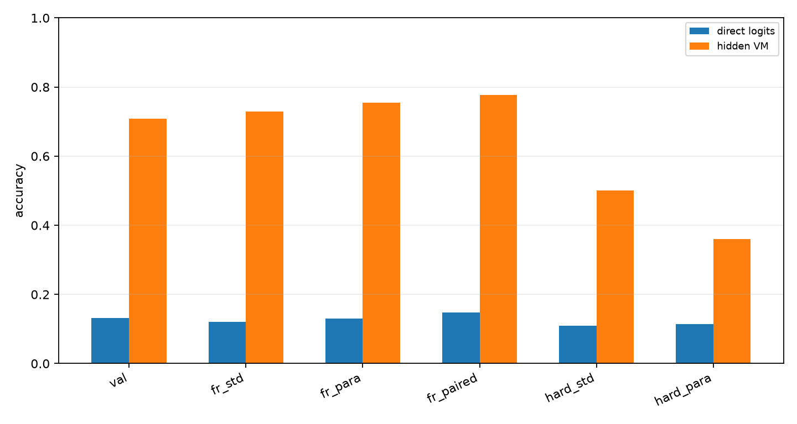
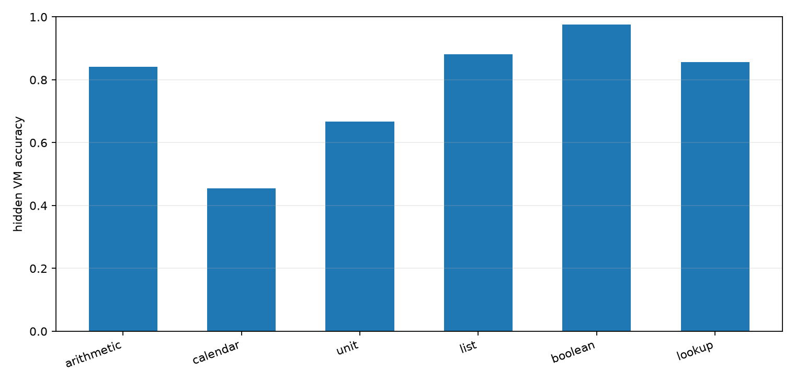
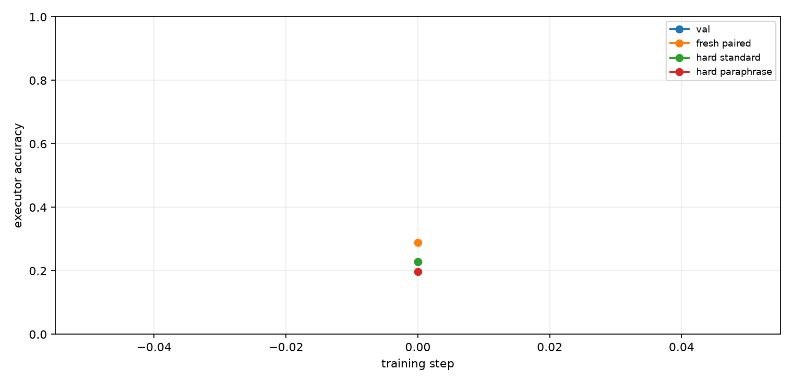
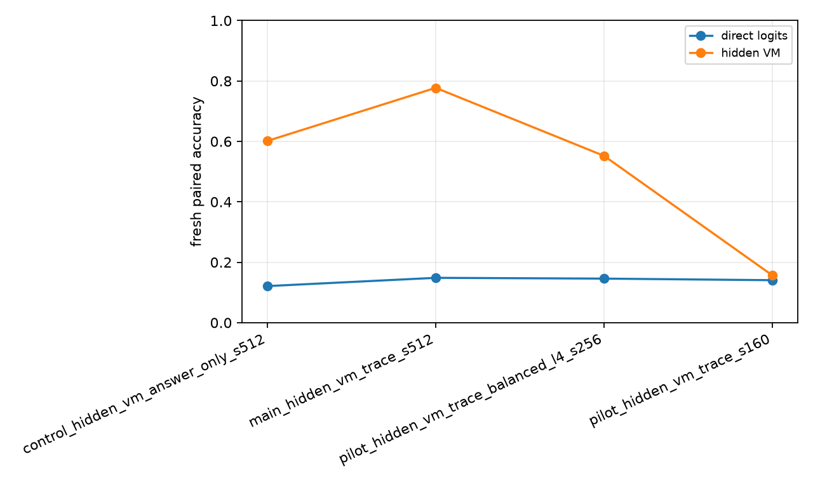

Qwen Hidden VM Mixed-Domain Compiler
Abstract
This experiment tests whether a Qwen 4B model can be posttrained to compile several natural-language task families into one hidden typed virtual machine. The model emits invisible VM slots, a deterministic runtime executes those slots, and the final answer is read from the runtime state. The task families are arithmetic chains, calendar shifts, unit-style transforms, list aggregation, boolean thresholding, and lookup/adjust rules.
Setup
- Primary run:
main_hidden_vm_trace_s512 - Model:
Qwen/Qwen3-4B - Variant:
trace - Train examples:
512 - Train steps:
520 - VM max steps:
6 - Train length range:
1to4 - Eval length:
4; hard length:6
The hidden VM uses typed operation slots and copied numeric arguments. Direct logits are the model's next-token numeric answer distribution at the answer marker; hidden VM accuracy is execution of the compiled invisible program.
Results
Final Splits
| Split | Direct | Hidden VM | Program exact | State prefix | Pair both-correct |
|---|---|---|---|---|---|
| val_mixed | 13.2% | 70.8% | 63.9% | 81.8% | n/a |
| fresh_standard_mixed | 12.0% | 72.9% | 62.5% | 79.4% | n/a |
| fresh_paraphrase_mixed | 13.0% | 75.5% | 63.5% | 81.4% | n/a |
| fresh_paired_mixed | 14.8% | 77.7% | 63.7% | 81.0% | 68.8% |
| hard_standard_mixed | 10.9% | 50.0% | 33.3% | 68.6% | n/a |
| hard_paraphrase_mixed | 11.5% | 35.9% | 19.3% | 64.9% | n/a |
| domain_arithmetic | 0.0% | 65.6% | 65.6% | 80.5% | n/a |
| domain_calendar | 28.1% | 56.2% | 56.2% | 78.9% | n/a |
| domain_unit | 3.1% | 71.9% | 71.9% | 83.6% | n/a |
| domain_list | 3.1% | 71.9% | 43.8% | 80.5% | n/a |
| domain_boolean | 46.9% | 90.6% | 81.2% | 86.7% | n/a |
| domain_lookup | 0.0% | 87.5% | 68.8% | 79.7% | n/a |

Domain Breakdown
| Domain | n | Direct | Hidden VM |
|---|---|---|---|
| arithmetic | 44.00 | 4.5% | 84.1% |
| calendar | 44.00 | 22.7% | 45.5% |
| unit | 42.00 | 0.0% | 66.7% |
| list | 42.00 | 0.0% | 88.1% |
| boolean | 42.00 | 61.9% | 97.6% |
| lookup | 42.00 | 0.0% | 85.7% |

Training Dynamics
Fresh paired hidden VM accuracy moved from 28.9% at initialization to 77.7% after training. Hard standard accuracy at length 6 was 50.0%.

Run Summary
| Run | Variant | Direct | Hidden VM | Program exact | State prefix |
|---|---|---|---|---|---|
| control_hidden_vm_answer_only_s512 | answer_only | 12.1% | 60.2% | 34.4% | 58.1% |
| main_hidden_vm_trace_s512 | trace | 14.8% | 77.7% | 63.7% | 81.0% |
| pilot_hidden_vm_trace_balanced_l4_s256 | trace | 14.6% | 55.2% | 49.0% | 70.6% |
| pilot_hidden_vm_trace_s160 | trace | 14.1% | 15.6% | 7.8% | 41.4% |

Interpretation
The primary measurement is fresh paired mixed-domain accuracy. Direct logits score 14.8%, while the trace-supervised hidden VM scores 77.7% (+62.9 pp). The matched answer-only hidden-VM control scores 60.2%, so trace supervision adds +17.6 pp over the same executable architecture trained only from final answers.
The control is important: final-answer gradients alone do learn a useful latent executor, but the trace run recovers substantially cleaner programs. Program-exact accuracy is 63.7% for the trace run versus 34.4% for answer-only, and state-prefix accuracy is 81.0% versus 58.1%. That gap matters because the end goal is not just to fit short synthetic answers; it is to make the model reliably write an inspectable executable representation.
The hard-length split is the caution flag. The trace run reaches 50.0% on length-6 standard prompts after training on length 1-4 programs, but paraphrased length-6 accuracy is only 35.9%. The learned compiler transfers beyond the training length, but it is not yet a length-general algorithm.
Decision
This is a positive result for the Qwen-attached direction. A small posttraining run attached a fixed executable substrate to Qwen 3 4B and produced a large improvement over direct next-token answering on fresh symbolic tasks. It does not demonstrate a universal intelligence multiplier, but it does identify a credible mechanism: train the model to compile prompts into a hidden executable intermediate representation, then let a deterministic runtime carry the exact computation.
The highest-impact next experiments are:
- 1. Hard-length curriculum and repair. Train on lengths 1-6, evaluate on 8-10, and add a verifier-driven repair pass where Qwen edits only the hidden program after failed execution. This directly attacks the remaining length-generalization weakness.
- 2. Real-task trace distillation. Build VM traces from tool-verifiable word problems, date arithmetic, unit conversions, table lookup, and small algorithmic tasks, then train the same compiler/runtime interface on natural data rather than synthetic templates.
- 3. Policy-gradient fine-tuning after trace warm start. Treat VM program emission as the action, deterministic execution as the environment transition, and answer verification as reward. Use trace training to initialize the policy, then optimize with a small KL-controlled RL phase to test whether the model can discover shorter or more robust programs than the teacher traces.
- 4. Wider residual attachment. Keep the fixed VM, but feed execution states back into upper-layer Qwen residual streams before answer generation. This tests whether executable latent state can improve ordinary language outputs instead of only producing bounded integer answers.
Limitations
- The domains are synthetic and deterministic.
- Answers are integers in a bounded value vocabulary.
- Trace supervision supplies exact hidden programs.
- The runtime is fixed and hand-designed.
- This is one primary run unless additional runs are added.
Artifacts
Small experiment files live in:
experiments/qwen_hidden_vm_mixed_domains/Large artifacts live in:
large_artifacts/qwen_hidden_vm_mixed_domains/checkpoints/Primary files:
analysis/summary.mdanalysis/final_metrics.csvanalysis/all_final_metrics.csvanalysis/figures/split_accuracy.pnganalysis/figures/domain_accuracy.pnganalysis/figures/training_curve.pnganalysis/figures/run_summary.pngruns/main_hidden_vm_trace_s512/metrics.csvruns/main_hidden_vm_trace_s512/train_log.csvreports/qwen_hidden_vm_mixed_domains_paper.mdreports/qwen_hidden_vm_mixed_domains_paper.htmlcheckpoint_manifest.csv